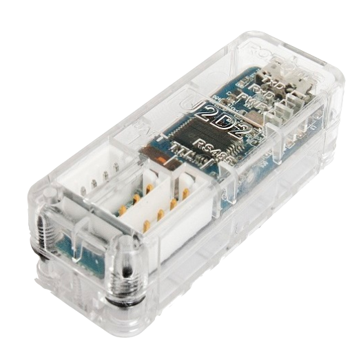
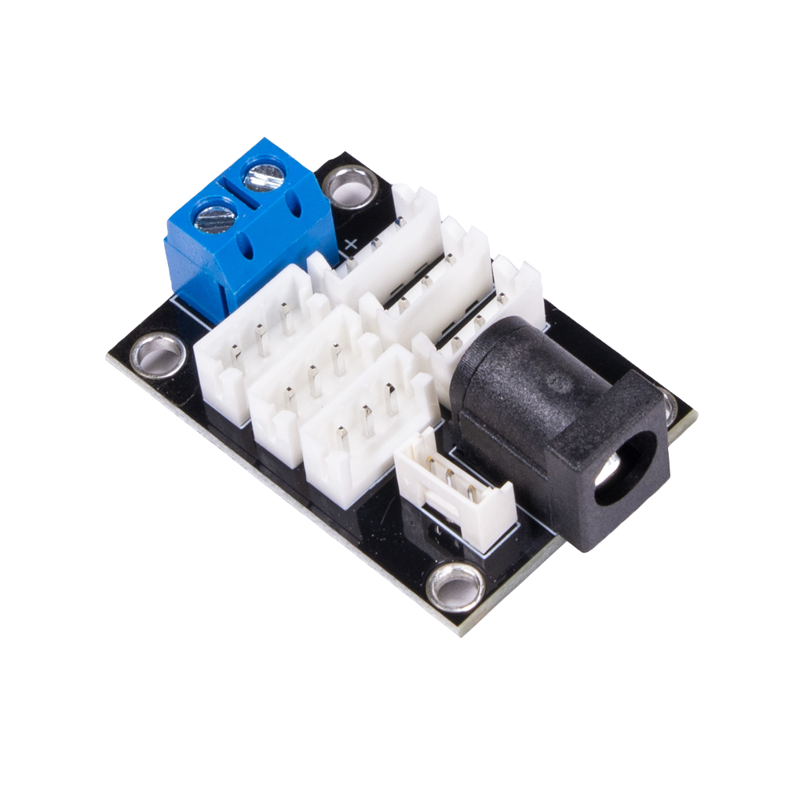
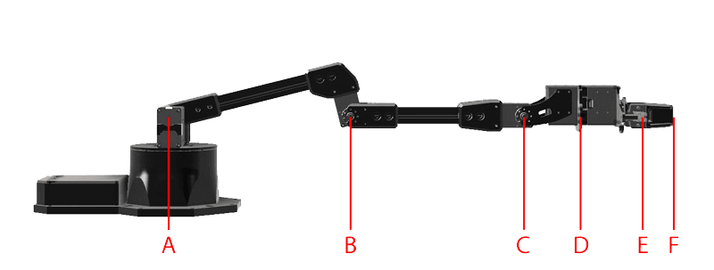
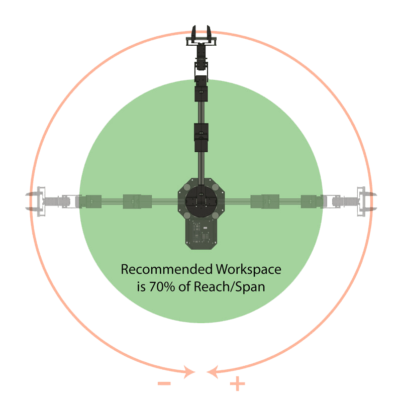
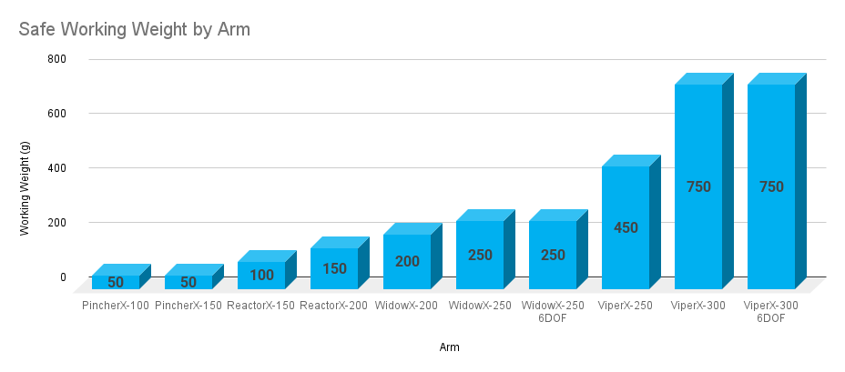
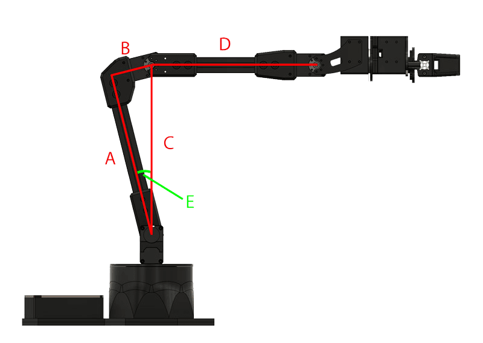
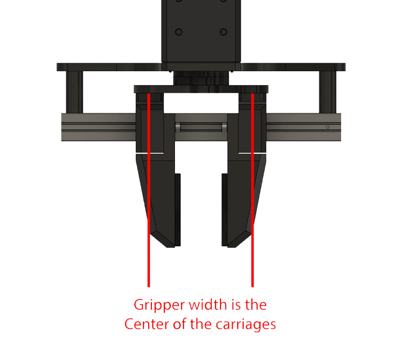

Specifications
This section details the technical specifications of Interbotix X-Series Arms.
In-Depth Specifications
This section provides links to each of the X-Series Arms’ more detailed specifications.
Hardware
ROBOTIS U2D2
The U2D2 controller is a USB to TTL converter that allows for the control of DYNAMIXEL servos using a computer.
See the U2D2 e-Manual page for more information.
Power Hub Board
The 6 Port, 3 Pin XM/XL Power Hub allows you to split the DYNAMIXEL daisy chain into 5 separate chains while providing power to all of them. It has the additional benefit of having both a 2.1x5.5mm female barrel jack and screw terminals.
See the Trossen Robotics Power Hub Store Page for more information.
Arm Reach
| B | C | D | E | F | |
|---|---|---|---|---|---|
| Elbow Joint | Wrist Tilt Joint | Wrist Rotate | Gripper Rail | Finger Tip | |
| PincherX-100 | 106 | 206 | N/A | 292 | 335 |
| PincherX-150 | 158 | 308 | 373 | 439 | 482 |
| ReactorX-150 | 158 | 308 | 373 | 439 | 482 |
| ReactorX-200 | 206 | 406 | 471 | 537 | 580 |
| WidowX-200 | 206 | 406 | 471 | 537 | 580 |
| WidowX-250 | 255 | 505 | 570 | 636 | 679 |
| WidowX-250 6DOF | 255 | 505 | 570 | 636 | 679 |
| ViperX-250 | 257 | 507 | 577 | 643 | 706 |
| ViperX-300 | 306 | 606 | 676 | 742 | 810 |
| ViperX-300 6DOF | 306 | 606 | 676 | 745 | 812 |
| A~B | B~C | C~D | D~E | E~F | |
|---|---|---|---|---|---|
| Upper Arm | Forearm | Wrist Tilt to Rotate | Gripper (to Rail) | Finger Tip | |
| PincherX-100 | 106 | 100 | 0 | 86 | 43 |
| PincherX-150 | 158 | 150 | 65 | 66 | 43 |
| ReactorX-150 | 158 | 150 | 65 | 66 | 43 |
| ReactorX-200 | 206 | 200 | 65 | 66 | 43 |
| WidowX-200 | 206 | 200 | 65 | 66 | 43 |
| WidowX-250 | 255 | 250 | 65 | 66 | 43 |
| WidowX-250 6DOF | 255 | 250 | 65 | 66 | 43 |
| ViperX-250 | 257 | 250 | 70 | 66 | 63 |
| ViperX-300 | 306 | 300 | 70 | 66 | 68 |
| ViperX-300 6DOF | 306 | 300 | 70 | 69 | 68 |
Workspace
|
 |
Note
Recommended Workspace is defined as 70% of total span of the arm.
Working Payload
|
 |
Note
The working payload for each arm is the maximum weight we recommend for periods of repeated movement inside of your recommended workspace. When operating for longer periods of time, ‘rest’ poses should be incorporated to prevent servos from overheating. In all situations you should be operating at or below the working payload for your model of arm.
Linkage Dimensions
|  |
|
Gripper Min / Max
|
 |
Note
The min and max values are measured from the center of the gripper carriages.